RECEIVE-ELITE-1 — elite tight control (Ball Control 99 · Dribbling 99 · Agility 99) and the three attributes worked backward
Presented for review — NOT frozen, not integrated beyond the receive pipeline (RECEIVE-V1 is not frozen). Local page: the character is a real player's model. Built from review_artifacts/receive_elite1/evidence/; the lab is sandbox/visual/receive_elite1.html.
1 · Why the previous model put the ball into space
Every receive-and-turn had one authored contact, and its ideal sent the ball to where the body would next meet it after the whole turn: RECEIVE-TURN-1's reconnection point (the root after the rotation and a 0.55 – 0.75 m run, + 0.40 m) and RECEIVE-CONTROL-1.1's handoff point (the ball HANDOFF_AHEAD = 1.2 – 2.4 m ahead of the runner when DRIBBLE-V1 takes it). A moving receiver often touched the ball at his run speed and paid the turn after it — an overrun of 1 – 2 m — so the ball had to travel as far as the body's slowest moment. Nothing touched the ball between the receive and DRIBBLE-V1's takeover; the body's generic turn limits (TURN-1's angle–speed law, 9 m/s² redirection, 520 – 620 °/s) set how long that gap was. Result: 3.30–5.22 m of separation through moving turns of 90° or more.
2 · The elite-control philosophy · 3 · who owns what
Simulation decides what happens; animation explains it. The receive TECHNIQUE is selected as before (directional, half-turn, outside-of-foot, through-stance, kill, aerial — the taxonomy is unchanged); everything after the selection is authored as football: Agility authors the body's path (braking into the plant, redirection, hip rotation, the acceleration out), Dribbling authors the feet (a contact inside a swing of the foot that plays it, at the cadence of rapid technical foot actions), each contact's ideal places the ball where the next foot will be — just ahead of the body on its authored path — and Ball Control executes every contact with the existing curve-B model and the bounded keyed draws. The ball is never attached, parented, teleported or frozen: every contact is one kernel schedule() at the ball's own position, the rigid-body ball is free between contacts. Once the body is on its exit line and running near its exit pace the last contact is the exit touch DRIBBLE-V1 takes over (frozen, unchanged).
Dribbling — the technical foot actions
| Dribbling | 50 | 70 | 90 | 99 | what it sets |
|---|---|---|---|---|---|
| cadence | 0.34 | 0.27 | 0.19 | 0.15 | s — shortest interval between two contacts of the sequence (alternating feet) |
| sameFoot | 0.46 | 0.38 | 0.3 | 0.26 | s — the same foot twice (its own swing cycle) |
| reach | 0.13 | 0.17 | 0.21 | 0.24 | m — how far off its planned point a foot still plays the ball |
| react | 0.17 | 0.14 | 0.11 | 0.1 | s — after a touch, until the player plays to what it actually did |
| spacing | 1.3 | 1.15 | 1.04 | 1 | × the next contact point's distance ahead of the body |
Agility — the body's reorientation
| Agility | 50 | 70 | 90 | 99 | what it sets |
|---|---|---|---|---|---|
| aBrake | 7.5 | 9 | 11 | 12.5 | m/s² — peak braking into the plant (generic 9.5) |
| aTurn | 6.5 | 8 | 10 | 11.5 | m/s² — mean redirection of the body's velocity after the contact (generic 9.0) |
| omega | 480 | 600 | 800 | 900 | °/s — peak hip rotation (generic 620) |
| entryK | 0.85 | 0.95 | 1.12 | 1.2 | × TURN-1's angle–speed law (entry speed of a plant) |
| pivotBase | 0.14 | 0.11 | 0.07 | 0.05 | s — a standing pivot's set-up (generic 0.10) |
| pivotOmega | 420 | 520 | 720 | 820 | °/s — a standing pivot's mean rate (generic 520) |
| accel | 4.2 | 4.8 | 5.8 | 6.4 | m/s² — acceleration out of the turn (generic 5.0) |
| goShare | 0.62 | 0.55 | 0.46 | 0.42 | the run out starts at this share of a standing pivot (generic 0.55) |
| stepT | 0.27 | 0.24 | 0.2 | 0.18 | s — the support-step period through the turn |
| vAdj | 2.2 | 2.8 | 3.3 | 3.6 | m/s — correction of the run toward the real ball (generic 3.2) |
Ball Control: RECEIVE-KILL-1.2 B's curve × RECEIVE-TURN-1's bounded keyed draws, unchanged — the precision of each contact. Draw key: seed | RECEIVE | receiver | R<event> | c<contact> | receive-control-v2 | dimension.
4 · 5 · 6 · The 99 / 99 / 99 reference
CURRENT → NEW, medians over seeds 1 – 3 (contacts and intervals: seed 1). "Turn" = from the first contact until the body has faced the exit for 0.15 s, + 0.3 s; "receive" = from the first contact to DRIBBLE-V1's first touch. Stable continuation = the first contact played facing the exit, running along it at ≥ 2.5 m/s, the ball ≤ 1.5 m away.
Stationary
| action | technique | outcome C / N | max separation, turn (m) | mean, turn | max, receive → DRIBBLE-V1 | contacts | intervals (s) | speed before | min speed | speed +0.5 s | +1.0 s | orientation (s) | stable continuation (s) | DRIBBLE-V1 1st touch (s) |
|---|---|---|---|---|---|---|---|---|---|---|---|---|---|---|
| stationary 30° ST_30_V12 | DIRECTIONAL | CLEAN 3 CLEAN 3 | 0.66 → 0.49 | 0.59 → 0.45 | 1.84 → 1.63 | 2 → 4 | 0.34 · 0.20 · 0.40 | 0.00 | 0.00 → 0.00 | 2.13 → 3.02 | 2.71 → 5.50 | 0.07 → 0.04 | 1.90 → 0.54 | 1.90 → 2.48 |
| stationary 60° ST_60_V12 | DIRECTIONAL | CLEAN 3 CLEAN 3 | 0.65 → 0.46 | 0.57 → 0.43 | 1.91 → 1.61 | 2 → 4 | 0.34 · 0.20 · 0.41 | 0.00 | 0.00 → 0.00 | 2.03 → 2.95 | 3.04 → 5.50 | 0.12 → 0.07 | 1.95 → 0.55 | 1.95 → 2.48 |
| stationary 90° ST_90_V12 | HALF_TURN | CLEAN 3 CLEAN 3 | 0.79 → 0.50 | 0.65 → 0.43 | 1.91 → 1.61 | 2 → 4 | 0.35 · 0.21 · 0.41 | 0.00 | 0.00 → 0.00 | 2.03 → 2.95 | 3.29 → 5.50 | 0.12 → 0.07 | 0.65 → 0.56 | 2.15 → 2.48 |
| stationary 120° ST_120_V12 | HALF_TURN | CLEAN 3 CLEAN 3 | 0.83 → 0.53 | 0.68 → 0.45 | 1.90 → 1.62 | 2 → 4 | 0.36 · 0.20 · 0.40 | 0.00 | 0.00 → 0.00 | 1.97 → 2.90 | 3.30 → 5.50 | 0.14 → 0.08 | 0.66 → 0.56 | 2.02 → 2.50 |
| stationary 135° ST_135_V12 | HALF_TURN | CLEAN 3 CLEAN 3 | 0.85 → 0.54 | 0.69 → 0.46 | 1.90 → 1.62 | 2 → 4 | 0.36 · 0.20 · 0.40 | 0.00 | 0.00 → 0.00 | 1.94 → 2.87 | 3.29 → 5.50 | 0.16 → 0.09 | 0.67 → 0.57 | 2.03 → 2.50 |
| stationary 150° ST_150_V12 | THROUGH_TURN | CLEAN 3 CLEAN 3 | 0.71 → 0.42 | 0.54 → 0.34 | 1.90 → 1.61 | 2 → 4 | 0.39 · 0.21 · 0.40 | 0.00 | 0.00 → 0.00 | 1.57 → 2.65 | 3.10 → 5.50 | 0.28 → 0.17 | 0.70 → 0.60 | 2.08 → 2.52 |
| stationary 180° ST_180_V12 | THROUGH_TURN | CLEAN 3 CLEAN 3 | 0.77 → 0.47 | 0.58 → 0.36 | 1.90 → 1.62 | 2 → 4 | 0.41 · 0.20 · 0.40 | 0.00 | 0.00 → 0.00 | 1.45 → 2.56 | 3.09 → 5.50 | 0.32 → 0.20 | 0.74 → 0.62 | 2.09 → 2.54 |
Running (5.5 m/s)
| action | technique | outcome C / N | max separation, turn (m) | mean, turn | max, receive → DRIBBLE-V1 | contacts | intervals (s) | speed before | min speed | speed +0.5 s | +1.0 s | orientation (s) | stable continuation (s) | DRIBBLE-V1 1st touch (s) |
|---|---|---|---|---|---|---|---|---|---|---|---|---|---|---|
| running 30° L_30_RUN_NORMAL | STRIDE | CLEAN 3 CLEAN 3 | 1.69 → 0.87 | 1.17 → 0.55 | 1.86 → 1.62 | 1 → 2 | 0.20 | 5.50 | 4.55 → 4.56 | 5.50 → 5.50 | 5.50 → 5.59 | 0.22 → 0.06 | 1.56 → 0.20 | 1.56 → 1.73 |
| running 60° L_60_RUN_NORMAL | STRIDE | CLEAN 3 CLEAN 3 | 1.89 → 0.94 | 1.31 → 0.56 | 1.99 → 1.71 | 1 → 2 | 0.21 | 5.50 | 4.33 → 4.31 | 5.34 → 5.27 | 5.50 → 5.61 | 0.28 → 0.08 | 1.57 → 0.21 | 1.57 → 1.72 |
| running 90° L_90_RUN_NORMAL | OPEN_TURN | CLEAN 3 CLEAN 3 | 3.30 → 0.48 | 2.32 → 0.44 | 3.33 → 1.62 | 1 → 4 | 0.22 · 0.21 · 0.20 | 5.50 | 3.10 → 3.59 | 3.34 → 4.12 | 4.18 → 5.50 | 0.45 → 0.08 | 1.85 → 0.63 | 1.85 → 2.15 |
| running 120° L_120_RUN_NORMAL | THROUGH_TURN | CLEAN 3 CLEAN 3 | 4.22 → 0.49 | 2.93 → 0.39 | 4.22 → 1.64 | 1 → 4 | 0.25 · 0.23 · 0.40 | 5.50 | 2.19 → 2.03 | 2.38 → 3.40 | 3.45 → 5.50 | 0.71 → 0.15 | 2.10 → 0.47 | 2.10 → 2.42 |
| running 150° L_150_RUN_NORMAL | THROUGH_TURN | CLEAN 3 CLEAN 3 | 4.43 → 0.45 | 3.12 → 0.33 | 4.43 → 1.86 | 1 → 4 | 0.22 · 0.18 · 0.20 | 5.50 | 1.15 → 0.99 | 1.50 → 2.42 | 3.06 → 4.52 | 0.73 → 0.19 | 2.10 → 0.60 | 2.10 → 2.08 |
| running 180° (pass from the front) F_180R_RUN_NORMAL | THROUGH_TURN | CLEAN 3 CLEAN 3 | 3.32 → 0.46 | 2.25 → 0.32 | 3.33 → 1.85 | 1 → 4 | 0.22 · 0.18 · 0.20 | 5.50 | 0.15 → 0.01 | 1.25 → 2.97 | 2.80 → 4.61 | 0.55 → 0.24 | 1.86 → 0.60 | 1.86 → 2.07 |
Sprinting (7.8 m/s)
| action | technique | outcome C / N | max separation, turn (m) | mean, turn | max, receive → DRIBBLE-V1 | contacts | intervals (s) | speed before | min speed | speed +0.5 s | +1.0 s | orientation (s) | stable continuation (s) | DRIBBLE-V1 1st touch (s) |
|---|---|---|---|---|---|---|---|---|---|---|---|---|---|---|
| sprinting 0° (pass from behind) RL_0_SPRINT_NORMAL | STRIDE | CLEAN 3 CLEAN 3 | 1.30 → 1.33 | 0.88 → 0.90 | 2.05 → 2.23 | 1 → 1 | — | 7.80 | 7.38 → 7.38 | 7.80 → 7.80 | 8.24 → 7.80 | 0.00 → 0.00 | 0.00 → 0.00 | 1.73 → 1.97 |
| sprinting 30° L_30_SPRINT_NORMAL | STRIDE | CLEAN 3 CLEAN 3 | 1.77 → 0.99 | 1.21 → 0.58 | 2.08 → 2.19 | 1 → 2 | 0.20 | 7.80 | 6.84 → 6.84 | 7.80 → 7.80 | 8.22 → 7.80 | 0.19 → 0.06 | 1.73 → 0.20 | 1.73 → 2.15 |
| sprinting 60° L_60_SPRINT_NORMAL | STRIDE | CLEAN 1 · TAKEN 2 CLEAN 3 | 2.71 → 0.62 | 1.83 → 0.50 | 2.81 → 2.17 | 1 → 3 | 0.20 · 0.36 | 7.80 | 5.96 → 5.92 | 6.51 → 7.53 | 7.46 → 7.80 | 0.42 → 0.08 | 1.81 → 0.20 | 1.81 → 2.50 |
| sprinting 90° L_90_SPRINT_NORMAL | OPEN_TURN | CLEAN 3 CLEAN 3 | 4.06 → 0.48 | 2.86 → 0.44 | 4.06 → 2.21 | 1 → 5 | 0.22 · 0.20 · 0.20 · 0.38 | 7.80 | 3.67 → 3.79 | 4.16 → 3.99 | 4.17 → 7.09 | 0.63 → 0.08 | 2.05 → 0.63 | 2.05 → 2.95 |
| sprinting 120° L_120_SPRINT_NORMAL | OPEN_TURN | CLEAN 3 CLEAN 3 | 5.18 → 0.45 | 3.74 → 0.42 | 5.18 → 2.36 | 1 → 5 | 0.22 · 0.21 · 0.22 · 0.40 | 7.80 | 2.41 → 2.70 | 3.88 → 2.72 | 2.63 → 6.05 | 0.85 → 0.10 | 2.32 → 0.65 | 2.32 → 3.01 |
| sprinting 150° L_150_SPRINT_NORMAL | THROUGH_TURN | CLEAN 3 CLEAN 3 | 5.22 → 0.65 | 3.75 → 0.44 | 5.22 → 2.33 | 1 → 6 | 0.19 · 0.24 · 0.18 · 0.20 · 0.39 | 7.80 | 1.16 → 1.21 | 2.96 → 1.21 | 1.65 → 5.20 | 0.93 → 0.19 | 2.35 → 0.81 | 2.35 → 3.17 |
| sprinting 180° (pass from the front) F_180R_SPRINT_NORMAL | THROUGH_TURN | CLEAN 3 CLEAN 3 | 3.37 → 0.46 | 2.31 → 0.32 | 3.38 → 2.37 | 1 → 5 | 0.22 · 0.18 · 0.20 · 0.40 | 7.80 | 0.14 → 0.03 | 1.16 → 2.51 | 2.80 → 6.25 | 0.55 → 0.24 | 1.86 → 0.60 | 1.86 → 2.97 |
10 · Ball separation over time (seed 1)
7 · 8 · 9 · Tight large turns, the rapid-contact architecture, the authoritative contact timings
A large turn is a sequence: the technique's first contact (a through-stance turn's far foot behind the standing leg, a half-turn's back foot) sends the ball only as far as the next foot's point — chosen among the next swings so that a surface of the technique can face that impulse and the ball's path clears the standing foot (else the technique's own direction, at the speed that brings the ball closest to the next foot); the body rotates around it; the next foot plays it again 0.15 – 0.25 s later (moving) or as the pivot completes (standing, 0.34 – 0.41 s); touches continue at Dribbling's cadence while the body accelerates out on its exit line (every other step once it runs at ≥ 3 m/s); the exit touch then hands the ball to DRIBBLE-V1. After every launch the player plays to the REAL ball: within Dribbling's reach of the plan the foot simply meets it; beyond, the run is corrected toward it at Agility's rate; else the contact moves (a little earlier / later on a swing) or becomes a recovery touch. Before the sequence is attempted its first touch is DRY-RUN on the kernel's free ball: if even the ideal touch could not be reached, the technique's own action is played instead (RECEIVE-MOVING-1's / RECEIVE-CONTROL-2's — the honest outcome of a body that cannot brake in time).
| action | NEW — the authoritative contacts (time from the first contact · foot · surface · launch speed) | CURRENT |
|---|---|---|
| stationary 30° | 1 +0.00 s L inside 1.75 m/s · 2 +0.34 s R inside 3.24 m/s · 3 +0.54 s L inside 5.45 m/s · 4 +0.95 s L inside 8.33 m/s exit first touch: direct | 1 +0.00 s L inside 2.16 m/s · 2 +0.55 s R inside 6.26 m/s |
| stationary 60° | 1 +0.00 s L inside 2.10 m/s · 2 +0.34 s R inside 3.25 m/s · 3 +0.55 s L inside 5.43 m/s · 4 +0.95 s L inside 8.32 m/s exit first touch: direct | 1 +0.00 s L inside 2.36 m/s · 2 +0.56 s R inside 6.57 m/s |
| stationary 90° | 1 +0.00 s R inside 1.44 m/s · 2 +0.35 s L inside 3.34 m/s · 3 +0.56 s R inside 5.48 m/s · 4 +0.96 s R inside 8.32 m/s exit first touch: direct | 1 +0.00 s R inside 2.32 m/s · 2 +0.64 s R inside 6.86 m/s |
| stationary 120° | 1 +0.00 s R inside 1.20 m/s · 2 +0.36 s L inside 3.41 m/s · 3 +0.56 s R inside 5.46 m/s · 4 +0.97 s R inside 8.32 m/s exit first touch: direct | 1 +0.00 s R inside 2.18 m/s · 2 +0.64 s R inside 6.78 m/s |
| stationary 135° | 1 +0.00 s R inside 1.08 m/s · 2 +0.36 s L inside 3.44 m/s · 3 +0.57 s R inside 5.46 m/s · 4 +0.97 s R inside 8.32 m/s exit first touch: direct | 1 +0.00 s R inside 2.11 m/s · 2 +0.65 s R inside 6.77 m/s |
| stationary 150° | 1 +0.00 s L inside 2.65 m/s · 2 +0.39 s R inside 3.46 m/s · 3 +0.60 s L inside 5.45 m/s · 4 +1.00 s L inside 8.31 m/s exit first touch: direct | 1 +0.00 s L inside 2.75 m/s · 2 +0.68 s R inside 6.61 m/s |
| stationary 180° | 1 +0.00 s L inside 2.31 m/s · 2 +0.41 s R inside 3.53 m/s · 3 +0.62 s L inside 5.47 m/s · 4 +1.02 s L inside 8.32 m/s exit first touch: direct | 1 +0.00 s L inside 2.51 m/s · 2 +0.70 s R inside 6.59 m/s |
| running 30° | 1 +0.00 s R inside 5.73 m/s · 2 +0.20 s L inside 8.35 m/s exit first touch: direct | 1 +0.00 s R inside 8.34 m/s |
| running 60° | 1 +0.00 s R inside 5.00 m/s · 2 +0.21 s L inside 8.31 m/s exit first touch: direct | 1 +0.00 s R inside 8.16 m/s |
| running 90° | 1 +0.00 s R inside 4.22 m/s · 2 +0.22 s L inside 3.74 m/s · 3 +0.43 s R inside 5.15 m/s · 4 +0.63 s L inside 8.31 m/s exit first touch: direct | 1 +0.00 s R inside 7.41 m/s |
| running 120° | 1 +0.00 s L sole 1.38 m/s · 2 +0.25 s R inside 4.26 m/s · 3 +0.47 s L inside 5.67 m/s · 4 +0.88 s L inside 8.33 m/s exit first touch: technique-glance (0.20 m from the next foot's point) | 1 +0.00 s L sole 6.58 m/s |
| running 150° | 1 +0.00 s L sole 0.45 m/s · 2 +0.22 s R inside 2.37 m/s · 3 +0.40 s L inside 3.14 m/s · 4 +0.60 s R inside 7.99 m/s exit first touch: technique (0.03 m from the next foot's point) | 1 +0.00 s L sole 5.69 m/s |
| running 180° (pass from the front) | 1 +0.00 s R inside 0.75 m/s · 2 +0.22 s L inside 1.55 m/s · 3 +0.40 s R inside 3.80 m/s · 4 +0.60 s L inside 8.04 m/s exit first touch: direct | 1 +0.00 s R inside 5.97 m/s |
| sprinting 0° (pass from behind) | 1 +0.00 s R inside 11.19 m/s | 1 +0.00 s R inside 11.01 m/s |
| sprinting 30° | 1 +0.00 s R inside 7.74 m/s · 2 +0.20 s L inside 11.21 m/s exit first touch: direct | 1 +0.00 s R inside 10.87 m/s |
| sprinting 60° | 1 +0.00 s R inside 6.44 m/s · 2 +0.20 s L inside 7.48 m/s · 3 +0.56 s L inside 11.20 m/s exit first touch: direct | 1 +0.00 s R inside 10.33 m/s |
| sprinting 90° | 1 +0.00 s R inside 4.85 m/s · 2 +0.22 s L inside 3.90 m/s · 3 +0.42 s R inside 5.00 m/s · 4 +0.63 s L inside 6.59 m/s · 5 +1.00 s L inside 11.15 m/s exit first touch: direct | 1 +0.00 s R laces 7.71 m/s |
| sprinting 120° | 1 +0.00 s R inside 4.23 m/s · 2 +0.22 s L inside 3.19 m/s · 3 +0.43 s R inside 3.97 m/s · 4 +0.65 s L inside 5.75 m/s · 5 +1.04 s L inside 10.90 m/s exit first touch: direct | 1 +0.00 s R inside 6.62 m/s |
| sprinting 150° | 1 +0.00 s L sole 0.39 m/s · 2 +0.19 s R inside 4.56 m/s · 3 +0.42 s L inside 0.89 m/s · 4 +0.61 s R inside 3.70 m/s · 5 +0.81 s L inside 6.05 m/s · 6 +1.20 s L inside 10.96 m/s exit first touch: technique-glance (0.47 m from the next foot's point) | 1 +0.00 s L sole 5.21 m/s |
| sprinting 180° (pass from the front) | 1 +0.00 s R inside 0.31 m/s · 2 +0.22 s L inside 0.94 m/s · 3 +0.40 s R inside 3.42 m/s · 4 +0.60 s L inside 5.81 m/s · 5 +1.00 s L inside 10.85 m/s exit first touch: direct | 1 +0.00 s R inside 5.90 m/s |
11 · 12 · 13 · 14 · Body-turn timings, Dribbling-99 cadence, Agility-99 response, Ball-Control-99 precision
See the reference tables (orientation, stable continuation, speeds, intervals). Dribbling 99: alternating-foot contacts every 0.21 s (moving, median, before the exit-line spacing), the same foot after 0.26 s, a foot reaching 0.24 m off its plan. Agility 99: a standing 180° pivot in 0.24 s, a sprinter's 180° reversal oriented in 0.24 s and back at 6.25 m/s 1 s after the contact (CURRENT 2.80). Ball Control 99: the largest execution error of any contact in the determinism runs 0.21 m/s (a firm pass's first touch); follow-up touches ≤ 0.02 m/s.
15 · 16 · 17 · 18 · Working backward from 99 — each attribute alone, then combined
The elite review set (20 actions) × seeds 1 – 3 at each level (60 runs per row). Moving turns of 90° or more in the second table of each pair.
Ball Control (Dribbling 99, Agility 99)
| BC | outcome | max separation, turn (median / p90) | mean, turn | max, receive | contacts | mean interval (s) | first-touch error (m/s) | miss at the 2nd contact (median / p90 m) | run corrections / recovery touches | speed +1.0 s | orientation (s) | elite declined |
|---|---|---|---|---|---|---|---|---|---|---|---|---|
| 99 | CLEAN 60 | 0.49 / 0.94 | 0.44 | 1.67 | 3.75 | 0.26 | 0.09 | 0.093 / 0.14 | 3 / 1 | 5.50 | 0.08 | 0 |
| 90 | CLEAN 60 | 0.48 / 0.96 | 0.43 | 1.67 | 3.75 | 0.26 | 0.32 | 0.101 / 0.24 | 4 / 0 | 5.50 | 0.08 | 0 |
| 80 | CLEAN 60 | 0.51 / 0.96 | 0.42 | 1.67 | 3.75 | 0.26 | 0.59 | 0.165 / 0.24 | 10 / 0 | 5.50 | 0.08 | 0 |
| 70 | CLEAN 60 | 0.55 / 0.97 | 0.42 | 1.68 | 3.75 | 0.26 | 0.78 | 0.198 / 0.24 | 22 / 2 | 5.50 | 0.08 | 0 |
| 60 | CLEAN 60 | 0.56 / 0.98 | 0.42 | 1.68 | 3.75 | 0.26 | 0.91 | 0.224 / 0.24 | 24 / 3 | 5.50 | 0.08 | 0 |
| 50 | CLEAN 60 | 0.56 / 0.99 | 0.43 | 1.68 | 3.75 | 0.26 | 1.05 | 0.240 / 0.24 | 31 / 4 | 5.50 | 0.08 | 0 |
moving turns ≥ 90°:
| BC | outcome | max separation, turn (median / p90) | mean, turn | max, receive | contacts | mean interval (s) | first-touch error (m/s) | miss at the 2nd contact (median / p90 m) | run corrections / recovery touches | speed +1.0 s | orientation (s) | elite declined |
|---|---|---|---|---|---|---|---|---|---|---|---|---|
| 99 | CLEAN 24 | 0.47 / 0.50 | 0.41 | 2.04 | 4.63 | 0.24 | 0.13 | 0.090 / 0.21 | 3 / 0 | 5.50 | 0.17 | 0 |
| 90 | CLEAN 24 | 0.46 / 0.52 | 0.41 | 2.03 | 4.63 | 0.24 | 0.47 | 0.110 / 0.22 | 3 / 0 | 5.50 | 0.17 | 0 |
| 80 | CLEAN 24 | 0.46 / 0.56 | 0.39 | 2.02 | 4.63 | 0.24 | 0.88 | 0.178 / 0.24 | 4 / 0 | 5.50 | 0.17 | 0 |
| 70 | CLEAN 24 | 0.46 / 0.57 | 0.39 | 2.02 | 4.63 | 0.24 | 1.17 | 0.216 / 0.24 | 10 / 0 | 5.50 | 0.17 | 0 |
| 60 | CLEAN 24 | 0.46 / 0.58 | 0.40 | 2.02 | 4.63 | 0.24 | 1.37 | 0.238 / 0.24 | 11 / 0 | 5.50 | 0.17 | 0 |
| 50 | CLEAN 24 | 0.46 / 0.58 | 0.40 | 2.02 | 4.63 | 0.24 | 1.59 | 0.240 / 0.24 | 14 / 0 | 5.50 | 0.17 | 0 |
Dribbling (Ball Control 99, Agility 99)
| DRI | outcome | max separation, turn (median / p90) | mean, turn | max, receive | contacts | mean interval (s) | first-touch error (m/s) | miss at the 2nd contact (median / p90 m) | run corrections / recovery touches | speed +1.0 s | orientation (s) | elite declined |
|---|---|---|---|---|---|---|---|---|---|---|---|---|
| 99 | CLEAN 60 | 0.49 / 0.94 | 0.44 | 1.67 | 3.75 | 0.26 | 0.09 | 0.093 / 0.14 | 3 / 1 | 5.50 | 0.08 | 0 |
| 90 | CLEAN 60 | 0.54 / 0.96 | 0.45 | 1.67 | 3.55 | 0.30 | 0.09 | 0.093 / 0.14 | 4 / 0 | 5.50 | 0.08 | 0 |
| 80 | CLEAN 60 | 0.57 / 0.69 | 0.48 | 1.70 | 2.90 | 0.39 | 0.09 | 0.116 / 0.19 | 7 / 0 | 5.50 | 0.08 | 0 |
| 70 | CLEAN 59 · TAKEN 1 | 0.62 / 1.10 | 0.50 | 1.69 | 2.75 | 0.41 | 0.09 | 0.112 / 0.14 | 5 / 0 | 5.50 | 0.08 | 0 |
| 60 | CLEAN 60 | 0.69 / 1.12 | 0.60 | 1.61 | 2.60 | 0.56 | 0.09 | 0.106 / 0.15 | 7 / 0 | 5.50 | 0.08 | 0 |
| 50 | CLEAN 60 | 0.82 / 1.14 | 0.67 | 1.61 | 2.50 | 0.58 | 0.10 | 0.096 / 0.13 | 16 / 1 | 5.50 | 0.08 | 0 |
moving turns ≥ 90°:
| DRI | outcome | max separation, turn (median / p90) | mean, turn | max, receive | contacts | mean interval (s) | first-touch error (m/s) | miss at the 2nd contact (median / p90 m) | run corrections / recovery touches | speed +1.0 s | orientation (s) | elite declined |
|---|---|---|---|---|---|---|---|---|---|---|---|---|
| 99 | CLEAN 24 | 0.47 / 0.50 | 0.41 | 2.04 | 4.63 | 0.24 | 0.13 | 0.090 / 0.21 | 3 / 0 | 5.50 | 0.17 | 0 |
| 90 | CLEAN 24 | 0.57 / 0.67 | 0.44 | 2.04 | 4.13 | 0.30 | 0.13 | 0.090 / 0.21 | 4 / 0 | 5.50 | 0.17 | 0 |
| 80 | CLEAN 24 | 0.64 / 0.69 | 0.50 | 1.99 | 3.50 | 0.40 | 0.13 | 0.128 / 0.19 | 7 / 0 | 5.50 | 0.17 | 0 |
| 70 | CLEAN 24 | 0.65 / 1.10 | 0.54 | 1.86 | 3.13 | 0.43 | 0.12 | 0.118 / 0.17 | 5 / 0 | 5.50 | 0.17 | 0 |
| 60 | CLEAN 24 | 0.92 / 1.12 | 0.66 | 1.99 | 2.75 | 0.59 | 0.12 | 0.129 / 0.15 | 7 / 0 | 5.50 | 0.17 | 0 |
| 50 | CLEAN 24 | 0.96 / 1.14 | 0.76 | 1.98 | 2.50 | 0.61 | 0.12 | 0.129 / 0.13 | 12 / 0 | 5.50 | 0.17 | 0 |
Agility (Ball Control 99, Dribbling 99)
| AGI | outcome | max separation, turn (median / p90) | mean, turn | max, receive | contacts | mean interval (s) | first-touch error (m/s) | miss at the 2nd contact (median / p90 m) | run corrections / recovery touches | speed +1.0 s | orientation (s) | elite declined |
|---|---|---|---|---|---|---|---|---|---|---|---|---|
| 99 | CLEAN 60 | 0.49 / 0.94 | 0.44 | 1.67 | 3.75 | 0.26 | 0.09 | 0.093 / 0.14 | 3 / 1 | 5.50 | 0.08 | 0 |
| 90 | CLEAN 60 | 0.50 / 0.93 | 0.44 | 1.75 | 3.85 | 0.27 | 0.09 | 0.098 / 0.14 | 3 / 0 | 5.46 | 0.09 | 0 |
| 80 | CLEAN 60 | 0.51 / 0.91 | 0.44 | 1.85 | 4.00 | 0.28 | 0.09 | 0.099 / 0.15 | 4 / 0 | 4.79 | 0.11 | 0 |
| 70 | CLEAN 60 | 0.53 / 0.91 | 0.45 | 1.90 | 4.10 | 0.30 | 0.08 | 0.099 / 0.14 | 3 / 4 | 4.28 | 0.14 | 0 |
| 60 | CLEAN 60 | 0.52 / 0.93 | 0.45 | 1.94 | 4.25 | 0.30 | 0.08 | 0.099 / 0.14 | 6 / 3 | 3.92 | 0.15 | 0 |
| 50 | CLEAN 56 · TAKEN 4 | 0.52 / 0.91 | 0.45 | 1.96 | 4.05 | 0.30 | 0.08 | 0.098 / 0.14 | 3 / 0 | 3.55 | 0.17 | 3 |
moving turns ≥ 90°:
| AGI | outcome | max separation, turn (median / p90) | mean, turn | max, receive | contacts | mean interval (s) | first-touch error (m/s) | miss at the 2nd contact (median / p90 m) | run corrections / recovery touches | speed +1.0 s | orientation (s) | elite declined |
|---|---|---|---|---|---|---|---|---|---|---|---|---|
| 99 | CLEAN 24 | 0.47 / 0.50 | 0.41 | 2.04 | 4.63 | 0.24 | 0.13 | 0.090 / 0.21 | 3 / 0 | 5.50 | 0.17 | 0 |
| 90 | CLEAN 24 | 0.46 / 0.52 | 0.41 | 2.06 | 4.88 | 0.25 | 0.10 | 0.106 / 0.23 | 3 / 0 | 5.09 | 0.19 | 0 |
| 80 | CLEAN 24 | 0.46 / 0.52 | 0.41 | 1.98 | 5.25 | 0.28 | 0.10 | 0.105 / 0.24 | 4 / 0 | 4.61 | 0.22 | 0 |
| 70 | CLEAN 24 | 0.44 / 0.58 | 0.41 | 1.93 | 5.50 | 0.26 | 0.10 | 0.104 / 0.23 | 3 / 4 | 4.08 | 0.22 | 0 |
| 60 | CLEAN 24 | 0.45 / 0.58 | 0.41 | 1.87 | 5.88 | 0.28 | 0.10 | 0.105 / 0.24 | 6 / 3 | 3.58 | 0.24 | 0 |
| 50 | CLEAN 21 · TAKEN 3 | 0.45 / 0.58 | 0.41 | 1.95 | 5.38 | 0.28 | 0.08 | 0.104 / 0.24 | 3 / 0 | 2.95 | 0.27 | 3 |
Combined (all three)
| BC / DRI / AGI | outcome | max separation, turn (median / p90) | mean, turn | max, receive | contacts | mean interval (s) | first-touch error (m/s) | miss at the 2nd contact (median / p90 m) | run corrections / recovery touches | speed +1.0 s | orientation (s) | elite declined |
|---|---|---|---|---|---|---|---|---|---|---|---|---|
| 99 / 99 / 99 | CLEAN 60 | 0.49 / 0.94 | 0.44 | 1.67 | 3.75 | 0.26 | 0.09 | 0.093 / 0.14 | 3 / 1 | 5.50 | 0.08 | 0 |
| 90 / 90 / 90 | CLEAN 60 | 0.51 / 0.96 | 0.43 | 1.75 | 3.85 | 0.27 | 0.30 | 0.121 / 0.21 | 7 / 0 | 5.46 | 0.09 | 0 |
| 80 / 80 / 80 | CLEAN 58 · TAKEN 2 | 0.60 / 0.78 | 0.47 | 1.85 | 3.33 | 0.38 | 0.55 | 0.186 / 0.19 | 25 / 3 | 4.73 | 0.11 | 0 |
| 70 / 70 / 70 | CLEAN 55 · TAKEN 5 | 0.64 / 0.82 | 0.51 | 1.88 | 3.23 | 0.44 | 0.64 | 0.170 / 0.17 | 49 / 10 | 4.28 | 0.14 | 0 |
| 60 / 60 / 60 | CLEAN 58 · TAKEN 2 | 0.69 / 0.83 | 0.54 | 1.93 | 3.15 | 0.47 | 0.74 | 0.150 / 0.15 | 50 / 20 | 3.92 | 0.15 | 0 |
| 50 / 50 / 50 | CLEAN 48 · TAKEN 12 | 0.71 / 1.33 | 0.57 | 1.84 | 3.00 | 0.57 | 0.87 | 0.130 / 0.13 | 58 / 37 | 3.55 | 0.17 | 0 |
moving turns ≥ 90°:
| BC / DRI / AGI | outcome | max separation, turn (median / p90) | mean, turn | max, receive | contacts | mean interval (s) | first-touch error (m/s) | miss at the 2nd contact (median / p90 m) | run corrections / recovery touches | speed +1.0 s | orientation (s) | elite declined |
|---|---|---|---|---|---|---|---|---|---|---|---|---|
| 99 / 99 / 99 | CLEAN 24 | 0.47 / 0.50 | 0.41 | 2.04 | 4.63 | 0.24 | 0.13 | 0.090 / 0.21 | 3 / 0 | 5.50 | 0.17 | 0 |
| 90 / 90 / 90 | CLEAN 24 | 0.47 / 0.54 | 0.41 | 2.04 | 4.88 | 0.25 | 0.36 | 0.133 / 0.21 | 4 / 0 | 5.09 | 0.19 | 0 |
| 80 / 80 / 80 | CLEAN 24 | 0.60 / 0.69 | 0.43 | 1.98 | 4.33 | 0.35 | 0.66 | 0.177 / 0.19 | 7 / 3 | 4.76 | 0.22 | 0 |
| 70 / 70 / 70 | CLEAN 23 · TAKEN 1 | 0.60 / 0.82 | 0.45 | 1.92 | 4.08 | 0.44 | 0.81 | 0.170 / 0.17 | 20 / 4 | 4.08 | 0.22 | 0 |
| 60 / 60 / 60 | CLEAN 24 | 0.62 / 0.81 | 0.45 | 1.86 | 4.13 | 0.47 | 0.94 | 0.150 / 0.15 | 20 / 10 | 3.58 | 0.24 | 0 |
| 50 / 50 / 50 | CLEAN 22 · TAKEN 2 | 0.63 / 1.57 | 0.47 | 1.63 | 3.75 | 0.57 | 1.04 | 0.130 / 0.13 | 25 / 21 | 3.01 | 0.27 | 0 |
The combined ladder against CURRENT at the same ratings (the attributes reach DRIBBLE-V1 in both)
| ratings | CURRENT outcome | NEW outcome | max separation, turn | speed +1.0 s |
|---|---|---|---|---|
| 99 / 99 / 99 | CLEAN 58 · TAKEN 2 | CLEAN 60 | 1.80 → 0.49 | 3.27 → 5.50 |
| 90 / 90 / 90 | CLEAN 55 · TAKEN 4 · RECEIVED 1 | CLEAN 60 | 1.79 → 0.51 | 3.22 → 5.46 |
| 80 / 80 / 80 | CLEAN 46 · TAKEN 14 | CLEAN 58 · TAKEN 2 | 1.92 → 0.60 | 3.31 → 4.73 |
| 70 / 70 / 70 | CLEAN 39 · TAKEN 12 · RECEIVED 9 | CLEAN 55 · TAKEN 5 | 1.90 → 0.64 | 3.41 → 4.28 |
| 60 / 60 / 60 | CLEAN 34 · TAKEN 19 · RECEIVED 7 | CLEAN 58 · TAKEN 2 | 1.92 → 0.69 | 3.44 → 3.92 |
| 50 / 50 / 50 | CLEAN 26 · TAKEN 22 · RECEIVED 12 | CLEAN 48 · TAKEN 12 | 1.92 → 0.71 | 3.45 → 3.55 |
19 · Receive → DRIBBLE-V1 takeover
672-run movement matrix at 99 / 99 / 99 (RECEIVE-MOVING-1's matrix: STAND / JOG / RUN / SPRINT × SLOW / NORMAL / FIRM / HARD × 0° – 180° × three pass directions × 2 seeds): CURRENT CLEAN 639 · TAKEN 15 · RECOVERED 2 · MISSED 16 · NEW CLEAN 657 · RECOVERED 3 · MISSED 12.
Max ball–player separation through the turn (median, CURRENT → NEW)
| receiver | 0° | 30° | 60° | 90° | 120° | 150° | 180° |
|---|---|---|---|---|---|---|---|
| STAND | 0.79 → 0.50 | 0.73 → 0.48 | 0.70 → 0.44 | 0.78 → 0.49 | 0.79 → 0.50 | 0.78 → 0.49 | 0.77 → 0.47 |
| JOG | 1.52 → 1.36 | 2.01 → 1.46 | 2.16 → 0.95 | 3.17 → 0.49 | 3.23 → 0.46 | 3.29 → 0.47 | 3.25 → 0.47 |
| RUN | 1.22 → 1.15 | 1.60 → 1.23 | 1.79 → 0.94 | 3.24 → 0.48 | 4.06 → 0.46 | 4.31 → 0.45 | 4.41 → 0.41 |
| SPRINT | 1.25 → 1.31 | 1.69 → 1.22 | 2.46 → 1.16 | 3.80 → 0.47 | 4.95 → 0.46 | 5.03 → 0.46 | 5.04 → 0.44 |
CLEAN takeovers (CURRENT → NEW, of 24)
| receiver | 0° | 30° | 60° | 90° | 120° | 150° | 180° |
|---|---|---|---|---|---|---|---|
| STAND | 24 → 24 | 24 → 24 | 24 → 24 | 24 → 24 | 24 → 24 | 24 → 24 | 24 → 24 |
| JOG | 24 → 24 | 24 → 24 | 20 → 20 | 23 → 24 | 24 → 24 | 23 → 24 | 23 → 24 |
| RUN | 24 → 24 | 24 → 24 | 20 → 20 | 24 → 24 | 22 → 22 | 24 → 24 | 24 → 24 |
| SPRINT | 24 → 24 | 21 → 24 | 13 → 22 | 24 → 24 | 24 → 22 | 23 → 24 | 19 → 23 |
Speed 1 s after the first contact (median, m/s)
| receiver | 0° | 30° | 60° | 90° | 120° | 150° | 180° |
|---|---|---|---|---|---|---|---|
| STAND | 3.23 → 5.50 | 3.05 → 5.50 | 3.05 → 5.50 | 3.18 → 5.50 | 3.21 → 5.50 | 3.25 → 5.50 | 3.08 → 5.50 |
| JOG | 5.14 → 5.50 | 5.47 → 5.90 | 5.40 → 5.59 | 4.20 → 5.49 | 3.54 → 5.50 | 3.10 → 5.24 | 2.80 → 4.65 |
| RUN | 5.50 → 5.70 | 5.50 → 5.50 | 5.50 → 5.63 | 4.19 → 5.50 | 3.58 → 5.47 | 3.08 → 5.28 | 2.80 → 4.89 |
| SPRINT | 8.23 → 7.79 | 8.22 → 7.80 | 7.78 → 7.79 | 4.17 → 7.00 | 2.69 → 6.02 | 1.83 → 5.29 | 1.54 → 4.61 |
How close can the exit touch put the ball for the frozen DRIBBLE-V1?
| exit distance (× RECEIVE-CONTROL-1.1's HANDOFF_AHEAD) | outcome (60 runs) | max separation, receive | mean | DRIBBLE-V1's first touch |
|---|---|---|---|---|
| × 1 | CLEAN 60 | 1.67 | 1.06 | 2.48 |
| × 0.85 | CLEAN 25 · TAKEN 35 | 2.69 | 1.10 | 2.70 |
| × 0.7 | CLEAN 54 · TAKEN 6 | 1.19 | 0.82 | 2.12 |
Kept at × 1.0: closer handoffs are not reliably taken over by the frozen DRIBBLE-V1 (non-monotonic — × 0.85 fails most). The remaining distance during the TURN-1.2 run-out is DRIBBLE-V1's takeover state, not the turn.
20 · 21 · 22 · 23 · Regressions, determinism, neutrality, performance
| check | result |
|---|---|
| elite OFF ≡ RECEIVE-MOVING-1 (RECEIVE-CONTROL-2's cases × BC 50 / 99 × seeds, RECEIVE-MOVING-1's owner cases, the movement matrix) | 422/422 bit-identical |
| elite ON, receives that are not turns (kill and hold, thigh / chest / head controls, kill-and-go, control-and-set-off) | 24/24 bit-identical |
| elite ON, the stationary turns | 34/34 changed — the elite sequence (by design) |
| moving receives (672-run matrix) | CLEAN 639 → 657, TAKEN 15 → 0, MISSED 16 → 12, RECOVERED 2 → 3; standing 168 → 168 CLEAN |
| determinism: every run repeated | 240/240 identical (99/99/99, BC 50, DRI 50, AGI 50, 70/70/70, 50/50/50) |
| Ball Control draws never re-rolled by Dribbling / Agility (or by Ball Control): the same contact index, the same standard normals at every rating | 172/172 contact indices (809 draws) |
| animation ON / OFF (contact ticks, launches, the body's path, the result, the handoff) | 100/100 identical · 46221 poses · contact foot at its pose ≤ 9.9 mm · planted-foot slip ≤ 5.4 cm |
| Chrome (the lab, animation off) = Node | 26/26 fingerprints |
| protected files (RECEIVE-MOVING-1's list + RECEIVE-MOVING-1 at 036d60ce) | 727/727 identical |
| CPU (ms per simulated second, receive phase / DRIBBLE-V1 after; worst single step; the moving selection per receive) | CURRENT 17 / 163, worst 46.1 ms, selection 1.89 ms · NEW 21 / 137, worst 39.9 ms, selection 1.97 ms |
24 · Clips, frame strips, the lab
Lab (local): CURRENT vs NEW — stationary 180° · NEW — sprinting 180° (gameplay + close + top) · Dribbling 99 vs 50 — running 120°. Controls: case, Ball Control / Dribbling / Agility, pipeline (NEW / CURRENT / CURRENT vs NEW), view (gameplay, close, top), speed 1× … 0.1×, frame step (, .). Numbered rings are the authoritative contacts with their times.
CURRENT vs NEW (99 / 99 / 99, 0.5×)
NEW — slow motion, top view, gameplay camera
The attributes (left 99 / 99 / 99, right the reduced rating)
Frame strips — NEW, close view, 0.3 s before to 1.1 s after the first contact

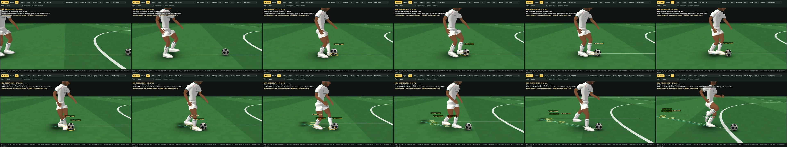

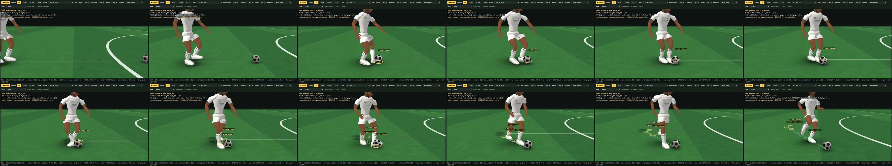

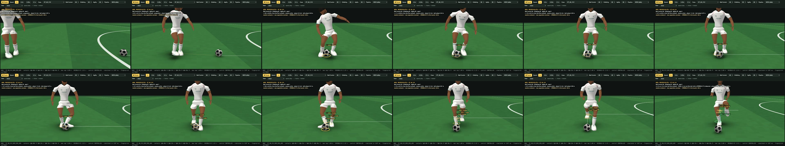

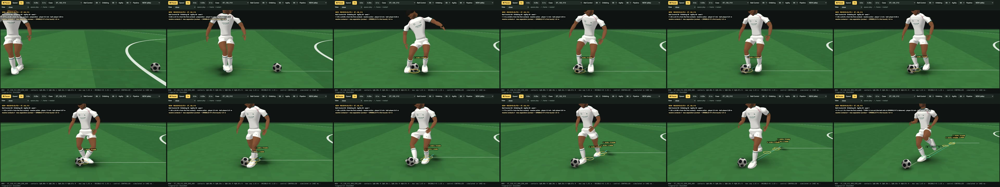

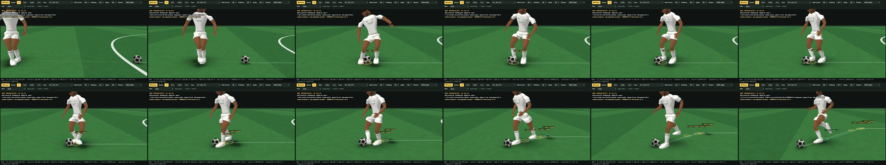

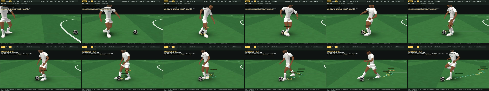

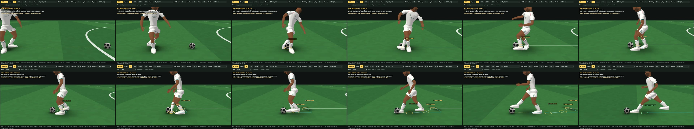

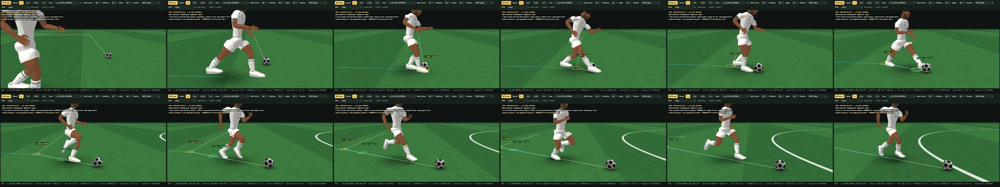

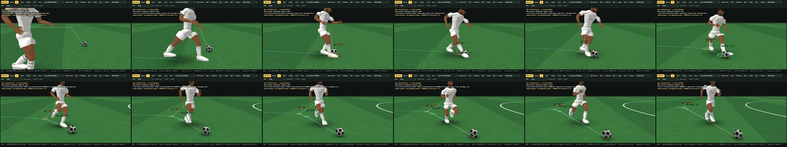

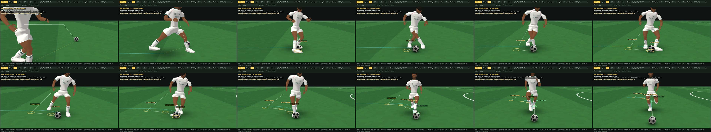

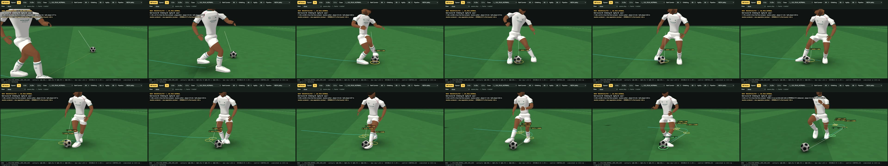

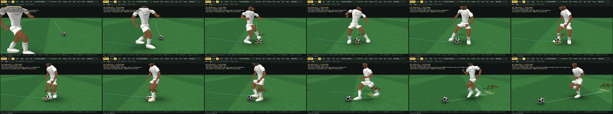

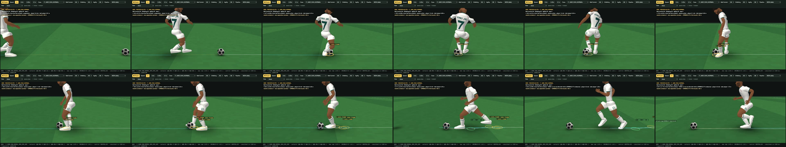

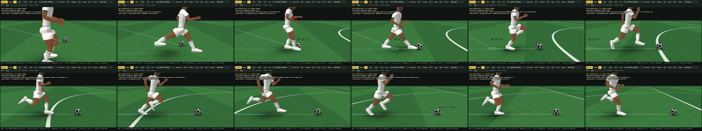

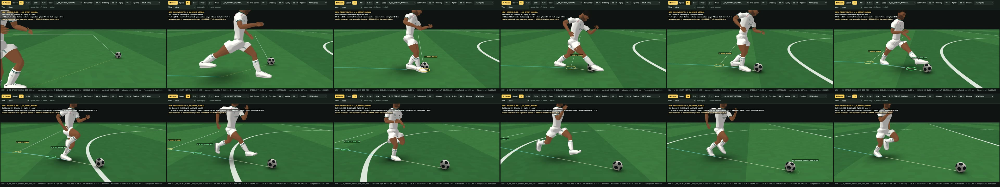

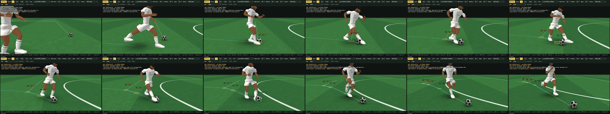

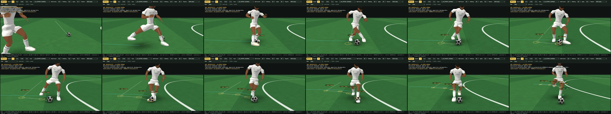

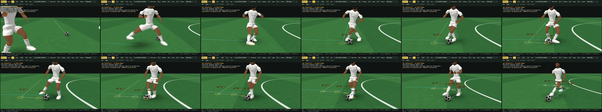

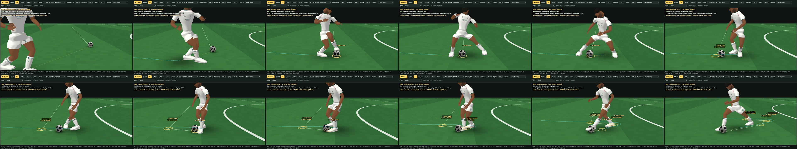

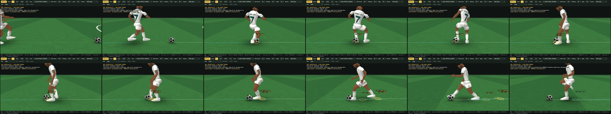
Frame strips — CURRENT | NEW (the priority comparisons)

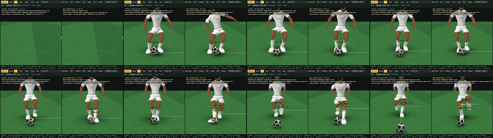

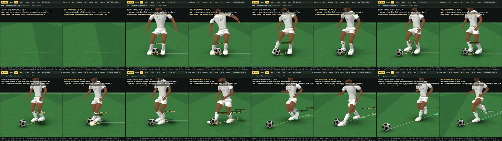

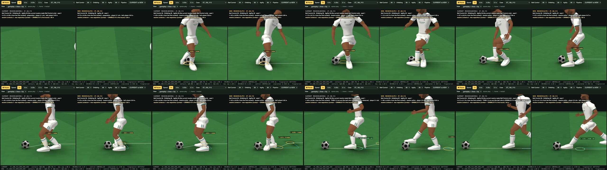

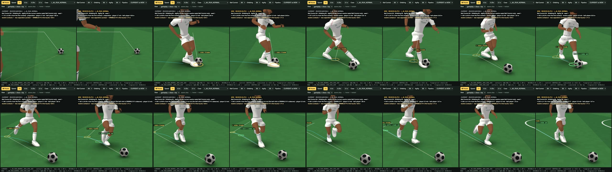

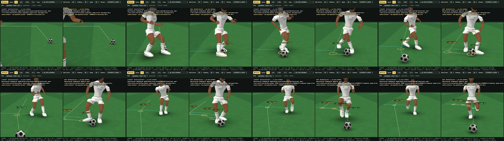

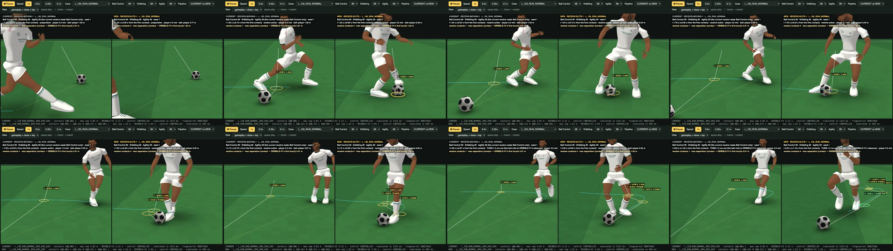

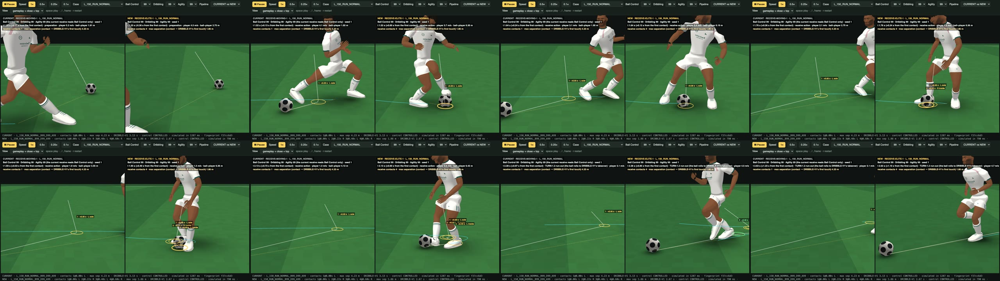

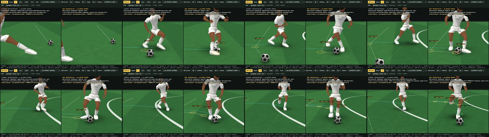

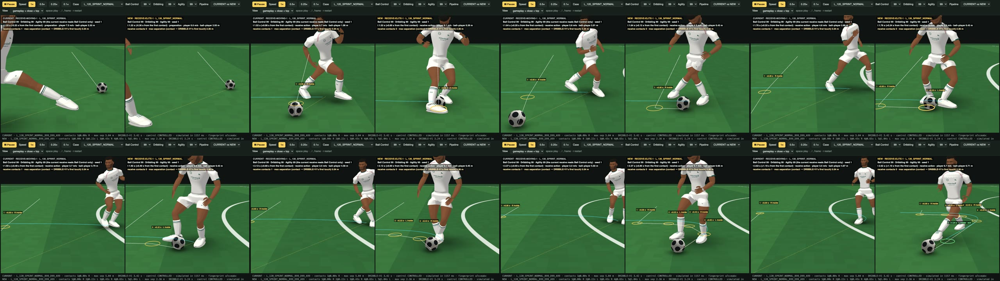

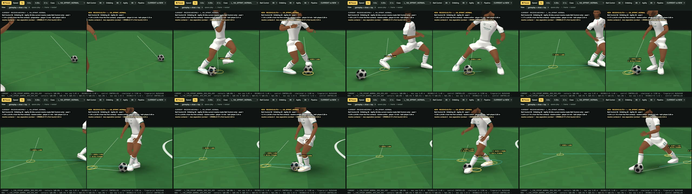

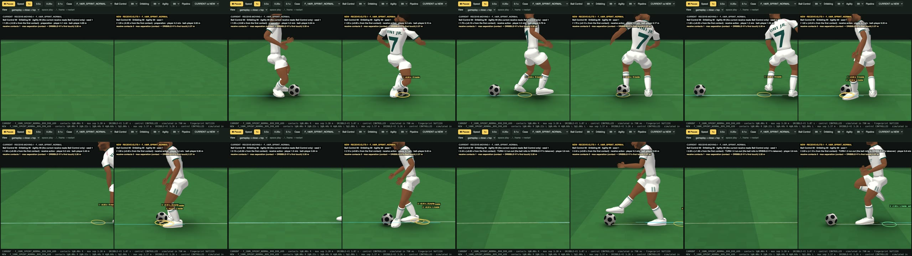
25 · Remaining limitations
- The exit touch still uses space. Through the turn the ball stays ≈ 0.4 – 0.65 m from the player; the exit touch then puts it where the frozen DRIBBLE-V1 takes it over (1.6 m ahead at 5.5 m/s, 2.0 m at 7.8 m/s, reached during TURN-1.2's 0.6 s run-out) — closer handoffs were measured and are not reliably accepted (§19). A tighter dribble after the turn needs DRIBBLE-V1 itself (frozen) or a receive layer that keeps dribbling longer.
- Ball Control's consequence is absorbed by elite feet. At Dribbling 99 / Agility 99, BC 50's first-touch errors (≈ 1 m/s) make the next foot reach further and the run correct, but the separation barely grows — the expected "fast feet, imperfect placement". The visible BC effect is stronger with lower Dribbling (the combined ladder).
- Low Agility at sprint into a big turn. At Agility 50 the sprinting 150° receive cannot plant before the ball (the approach brakes too little), the elite sequence's dry run fails and the technique's own action is played (the ball into space, as CURRENT) — 3 of 60 Agility-50 runs; a fuller answer is an earlier, Agility-aware braking decision in the approach.
- Stationary second touch. A standing turn's second contact comes as the pivot completes (0.34 – 0.41 s), not within 0.25 s: the support foot must lift and step first.
- The body is authored kinematics. The human body (RECEIVE-TURN-1.1's, generalised) explains the authored path with IK; the blend into TURN-1.2's pose at the switch leaves planted-foot slip ≤ 5.4 cm, and a leg may reach full extension at a far contact. No force simulation.
- The run-in before a moving action blends from TURN-1.2's running pose into this body's steps over 0.14 s; the gait of the run-in is this body's, not RUN-1's.
- Rating anchors are first values (50 / 70 / 90 / 99), tuned on the 99 reference and checked for a continuum — not calibrated against player data.
- No pressure, no opponents, no weak-foot term beyond the existing selection preference; the matrix's MISSED receives (12) are passes no technique could take (RECEIVE-MOVING-1's, fewer than CURRENT's 16).
Generated by sandbox/visual/receive_elite1/tools/re1_review_build.mjs.